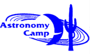

Register for an Astronomy Camp in 2008!
The dates for the year 2008
Astronomy Camps are as follows. Click on the dates for application materials.
Click on the type of Camp for descriptive information about that particular
opportunity.
None of the Camps assumes a
prior background in astronomy. Each Camp is available to interested people
from around the world and does not require a previous connection with The
University of Arizona.
| APPLICATION MATERIALS | CAMP DESCRIPTION | STATUS | HIGHLIGHTS |
| April 11-13 | Adult Girl Scout leaders |
full | held at
The Hacienda Center of Tucson's Sahuaro Council sponsored by NASA through NIRCam and the James Webb Space Telescope |
| May 29-June 1 | Beginning & Advanced Adult | full | operate 60" & 61" telescopes; eyepiece viewing; solar & CCD Imaging; CCD Spectroscopy |
| June 6-13 | Beginning Teen | full | introductory coverage of astronomy, engineering, & physical science; operate 40", 60" & 61" telescopes |
| June 16-20 | School group | reserved | Tecnologico de Monterrey school; Hermosillo, Son., Mexico |
| June 23-July 1 | Advanced Teen | full | quantitative observing projects with 40", 60" &
61" telescopes requires either Algebra II or Geometry |
| October 3-5 | Adult Girl Scout leaders |
held at
The Hacienda Center of Tucson's Sahuaro Council sponsored by NASA through NIRCam and the James Webb Space Telescope |